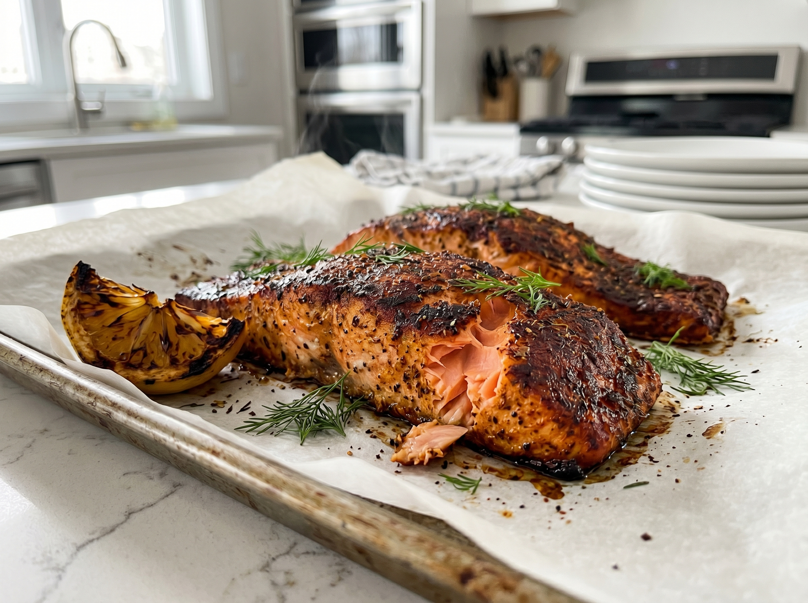
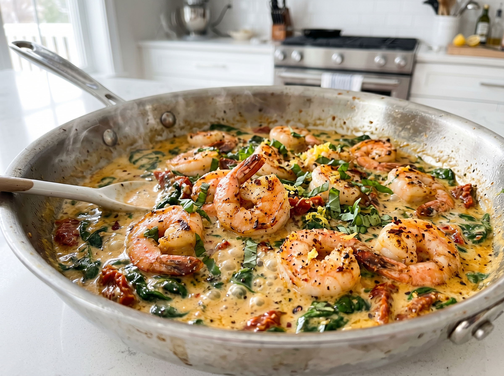

Crispy Honey Garlic Salmon
⏱ 17 minutes | Flaky salmon with a sticky sweet-savory glaze. The fastest weeknight dinner that looks restaurant-quality.
View Recipe →Easy salmon, quick shrimp, and fast fish dinners that taste restaurant-quality. Mediterranean flavors, high-protein options, budget-friendly recipes, and restaurant-worthy presentations — all tested in a home kitchen.
Seafood is the ultimate weeknight protein. It cooks faster than chicken, delivers more omega-3s, and brings restaurant-quality elegance to your table without the takeout price tag.
Whether you're looking for crispy-skinned salmon fillets, tender shrimp in garlic butter, Mediterranean-inspired white fish, or high-protein seafood meals, you'll find tested recipes that deliver bold flavors and restaurant presentation in 30 minutes or less.
Seafood is nature's fast food. Most fish and shrimp cook in 10–20 minutes, making them the perfect choice for weeknight dinners when you're short on time but refuse to sacrifice flavor.
⏱ 17 minutes | Flaky salmon with a sticky sweet-savory glaze. The fastest weeknight dinner that looks restaurant-quality.
View Recipe →
⏱ 10 minutes | Bold, buttery, garlicky shrimp. Faster than delivery, better than any restaurant.
View Recipe →💡 Timing hack: Pat seafood dry before cooking — moisture is the enemy of crispy skin and caramelization. Use paper towels and let your salmon sit uncovered in the fridge for 15 minutes before cooking for maximum crispness.
Mediterranean cuisine celebrates fresh seafood with bold herbs, citrus, and healthy fats. These recipes deliver authentic flavors that taste like you spent hours in the kitchen.

⏱ 20 minutes | Bold 5-ingredient spice rub, perfectly flaky salmon, no fuss. The best weeknight salmon recipe.
Mediterranean twist: The combination of smoked paprika, garlic, and lemon brings Spanish flavors to a simple weeknight dinner. Serve with roasted vegetables or over rice.
View Recipe →
⏱ 20 minutes | Juicy shrimp in a creamy sun-dried tomato and spinach sauce. Looks fancy, takes 20 minutes.
Why it works: Sun-dried tomatoes are flavor concentrated, adding deep umami and Mediterranean authenticity without requiring fresh tomato prep. The cream balances the acidity and makes the sauce luxurious.
View Recipe →💡 Pantry staple: Keep sun-dried tomatoes, quality olive oil, and jarred garlic on hand. These three ingredients instantly elevate any seafood dish to Mediterranean status.
Seafood is protein-dense and lower in calories than meat. These recipes deliver 30+ grams of protein per serving while maintaining incredible flavor — perfect for fitness goals and post-workout meals.
💡 Protein facts: Salmon has 25g protein per 3.5 oz serving and is rich in omega-3s. Shrimp has 24g protein and virtually no carbs. White fish like cod and halibut are lean at 20g protein with minimal fat.
Seafood doesn't have to be expensive. Shrimp, canned fish, and frozen fillets are budget-friendly options that deliver restaurant-quality results when paired with bold sauces and smart cooking techniques.
💡 Budget hack: Buy shrimp frozen and wild-caught salmon on sale. Frozen shrimp keeps for months and thaws quickly (submerge in cold water for 15 minutes). When good salmon goes on sale, buy extra and freeze — it stays excellent for up to 3 months.
Three steps: (1) Pat salmon dry with paper towels. (2) Preheat your skillet over medium-high heat with a thin layer of oil until it just starts to shimmer. (3) Place salmon skin-side down and resist the urge to move it for 4–5 minutes — this allows the skin to crisp and release naturally. When ready, it will release without sticking.
Both are excellent. Most "fresh" seafood at retail has been frozen and thawed. Frozen seafood actually locks in freshness at peak quality. Buy frozen shrimp and fish fillets confidently — they're often better than "fresh" options that have been sitting on ice for days. Thaw frozen seafood overnight in the refrigerator or quickly in cold water (15 minutes).
Salmon: Done when it flakes easily with a fork and reaches 125–130°F internal temperature (medium). Shrimp turns opaque and curls into a tight C-shape (about 2–3 minutes per side). White fish (cod, halibut) is done when it's opaque and flakes with minimal pressure. Avoid overcooking — seafood becomes tough and dry quickly.
Cooked seafood keeps in the refrigerator for 2–3 days (less than chicken due to moisture). Store in an airtight container. For best texture, reheat gently in a skillet over low heat or briefly in a 275°F oven. Pan-seared dishes don't reheat well — the coating loses crispness. Baked or sauced seafood reheats better.
Find quick dinners across all our favorite proteins
Freshly added seafood dinners — crispy shrimp, salmon bites, and sriracha salmon bowls, all ready in 25 minutes or less.

⏱ 25 min | 🏋️ 25g protein
Crispy fried shrimp tossed in the legendary bang bang sauce — creamy, sweet and spicy in every bite. A 25-minute homemade...
View Recipe →
⏱ 11 min | 🏋️ 35g protein
Crispy-edged salmon cubes basted in garlic butter, on the table in 10 minutes. The trending salmon bites recipe that makes...
View Recipe →
⏱ 20 min | 🏋️ 36g protein
Caramelized honey-sriracha salmon over rice with crunchy cucumber and creamy avocado — the trending salmon bowl that tastes...
View Recipe →
⏱ 20 min | 🏋️ 38g protein
Juicy shrimp in a silky sun-dried tomato cream sauce — this 20-minute marry me shrimp will have everyone asking for seconds.
View Recipe →Subscribe to get fresh seafood recipes (and all our other easy dinners) sent straight to your inbox, plus exclusive cooking tips and techniques.